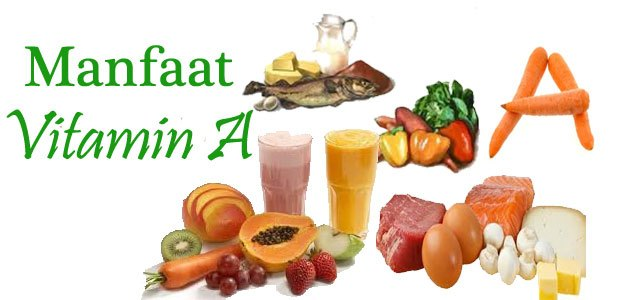

Manfaat Vitamin A

Vitamin A merupakan salah jenis vitamin yang larut dalam lemak. Meski istilah vitamin A sering merujuk pada senyawa retinol, namun kelompok ini terdiri dari beberapa senyawa lain, yaitu retinol.
Fungsi dan Manfaat Vitamin A
Berikut ini beberapa manfaat vitamin A bagi tubuh manusia.
Kesehatan Mata
Vitamin A memiliki peran penting dalam kesehatan indera penglihatan manusia. Vitamin ini membantu menyalurkan objek yang diterima oleh retina mata ke otak sebagai sebuah gambar. Senyawa yang berperan dalam hal ini adalah retinol.
Antioksidan
Salah satu bentuk Vitamin A yang dikenal dengan Beta Karoten, merupakan senyawa dengan aktifitas antioksidan yang mampu menangkal radikal bebas. Baik radikal bebas yang berasal dari oksidasi tubuh mupun polusi dari luar.
Sistem Imun
Vitamin A juga berfungsi sebagai sistem inum eksternal yang melindungi tubuh dari radikal bebas, virus, bakteri, jamur dan patogen. Mencukupi asupan vitamin A harian berarti meningkatkan kekebalan tubuh.
Mencegah Kanker
Vitamin A mampu melawan kanker dengan menekan pertumbuhan DNA dalam sel-sel kanker.
Penyembuhan Luka
Vitamin A dapat membantu menjaga kesehatan jaringan di dalam tubuh kita. Sehingga dapat membantu mempercepat proses penyembuhan luka.
Pertumbuhan
Vitamin A juga sangat diperlukan untuk pertumbuhan dan perkembangan embrio pada janin, dan menentukan gen pada proses pembentukan organ-organ perkembangan embrio.
Konsumsi Vitamin A
• Dosis harian: 750 mcg
• Gejala kekurangan vitamin A: Penglihatan berkurang, kulit kering.
• Kelebihan vitamin A: Kerusakan hati, tulang, dan gangguan penglihatan. Tanda kelebihan vitamin A adalah telapak tangan dan kelopak mata berwarna kuning.
• Makanan sumber vitamin A: Hati, wortel, produk susu, ubi merah, labu, mangga, bayam, brokoli, kangkung, keju cheddar, cabai.